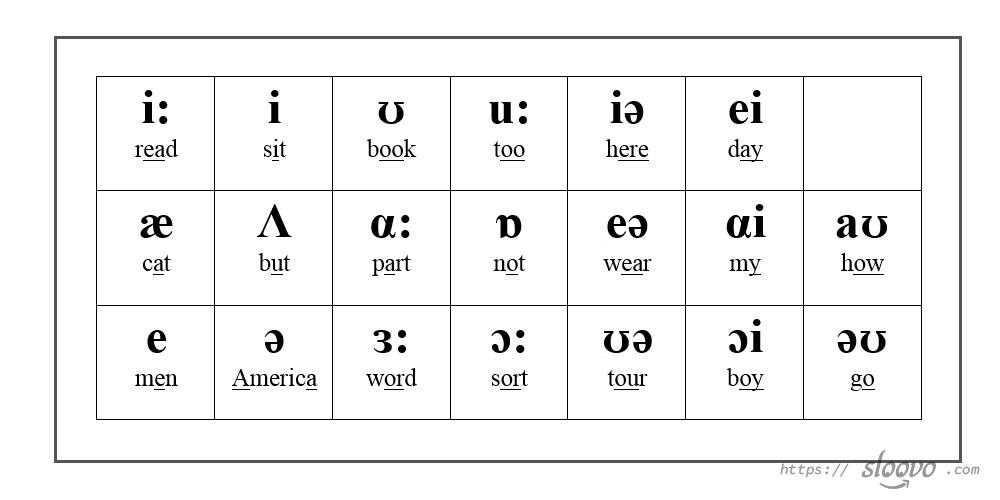
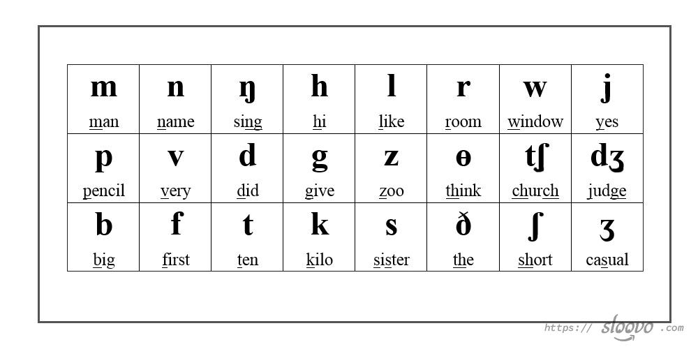
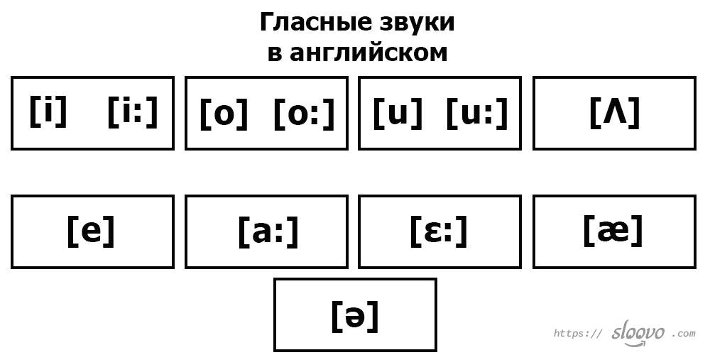
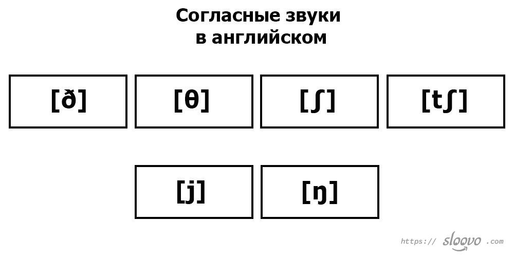
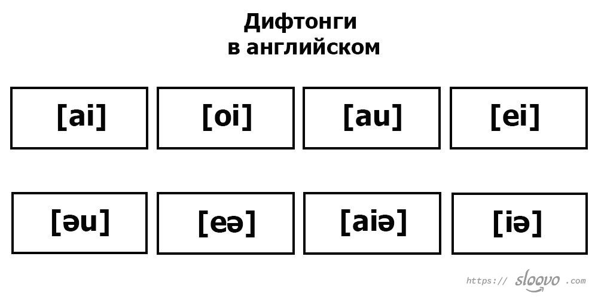

Английская транскрипция и правила чтения в английском
Вам нужно перевести с русского на английский или Вас интересует английская транскрипция? Английская транскрипция нужна для того, чтобы правильно читать слова и без акцента. Транскрипция — запись звучания буквы в виде специальных символов. Помимо транскрипции в словарях представлена очень часто озвучка. При заучивании слова обязательно нужно смотреть на транскрипцию и прослушать произношение. Английская транскрипция тесно связана с правилами чтения. Английский отличается тем, что не все буквы читаются, как пишутся. Это всё же не испанский и даже не русский. Предлагаем рассмотреть значки английской транскрипции и как нужно произнеси каждый символ.
Содержание
· 1. Английская транскрипция
· 2. Правила чтения в английском языке
· 3. Гласные звуки в английском языке
· 4. Согласные звуки в английском языке
· 5. Дифтонги в английском языке
Английская транскрипция

|
Согласные звуки (символы) и произношение русскими буквами. |
[b]=[б] [d]=[д] [f]=[ф] [Ʒ]=[ж] [dƷ]=[дж] [g]=[г] [h]=[х] [k]=[к] [l]=[л] [m]=[м] [n]=[н] [p]=[п] [s]=[с] [t]=[т] [v]=[в] [z]=[з] [tʃ]=[ч] [ʃ]=[ш] [r]=[р — как в слове «русский», очень мягкая] |
|
Гласные звуки (символы) и произношение русскими буквами. |
[Ʌ]=[«а» короткое] [a:]=[«а» глубокое] [i]=[«и» короткое] [i:]=[«и» долгое] [o]=[«о» короткое] [o:]=[«о» глубокое] [u]=[«у» короткое] [u:]=[«у» долгое] [e]=[как в слове «дело»] [ɛ:]=[как в слове «свёкла»] |
|
Дифтонги — особые звуки, которые состоят из нескольких букв. |
[Əu]=[оу] [au]=[ау] [ei]=[эй] [oi]=[ой] [ai]=[ай] |
|
Особые звуки. |
[Ɵ]=[«с» словно изображаете змею, которая шипит] [ð]=[«з» словно изображаете жужжание пчелы] [ŋ]=[«нь» произносим как будто немного заложен нос] [w]=[«уэ» легко произносим] [æ]=[«э»] [ə]=[нейтральный, обозначает безударные гласные] |
Правила чтения в английском языке
В английском несколько типов слогов:
1. открытый — оканчивается на гласную (like — нравится);
2. закрытый — оканчивается на согласную (pet — животное).

Гласные звуки в английском языке
|
Звук |
Какие буквы или буквосочетания дают этот звук |
|
[i] |
"i" в закрытом слоге "till"; "y" в закрытом слоге "gymnasia". |
|
[i:] |
"ee" — "seel"; "e" в открытом слоге "tree"; "ea" — "meat". |
|
[e] |
"e" в закрытом слоге "bed"; "ea" — "pleasure". |
|
[o] |
"o" в закрытом слоге "pot"; "a" в закрытом слоге "swan". |
|
[o:] |
"or" — "for"; "aw" — "dawn"; "au" — "fauna"; "all" — "mall"; "ald", "alk" — "talk"; "our" — "pour". |
|
[a:] |
"a" в закрытом слоге "far"; "ar" — "farmer"; "согласная + alm" — "calm". |
|
[u] |
"oo" — "took"; "pu" в закрытом слоге — "put"; "ou + согласная" — "could"; "ru + согласная и гласная" — "prune". |
|
[u:] |
Все те же правила, что и для [u:], но здесь долгота уже сложилась исторически, поэтому следует сверяться со словарём. |
|
[ε:] |
"i/u/e+r" — "personal"; "ear" — "learnt". |
|
[ə] |
Для неударных гласных "butter". |
|
[Λ] |
"u" в закрытом слоге "sun". |
|
[æ] |
"a" в закрытом слоге "bad". |

Согласные звуки в английском языке
|
Звук |
Какие буквы или буквосочетания дают звук |
|
[ð] [θ] |
"th" — между гласными в середине слова "withdraw"; "th" — в начале или конце слова "thank you". |
|
[∫] |
"sh" — "show"; "tion/cious/cian" — "constitution". |
|
[t∫] |
"ch" — "children"; "ture" — "future". |
|
[j] |
"ew" — "few"; "y" в начале слова + гласная "you"; "u" в открытом слоге "music". |
|
[ŋ] |
"ng" — носовой звук "thing". |

Дифтонги в английском языке
|
Звук |
Какие буквы или буквосочетания дают этот звук |
|
[ai] |
"i" в открытом слоге "pine"; "y" в открытом слоге "my"; "ie" в конце слова "pie"; "ye" в конце слова "dye". |
|
[oi] |
"oy" в конце слова "toy"; "oi" — "noise". |
|
[au] |
"ow" — "now"; "ou" — "found". |
|
[ei] |
"ey" — "grey"; "ai" в закрытом слоге "painter"; "ay" — "way"; "a" в открытом слоге "tale". |
|
[əu] |
"o" в открытом слоге "show"; "oul" — "soul"; "ow" — "blow"; "old" — "cold"; "oa" — "loach". |
|
[eə] |
"are" — "flare"; "air" — "fairy". |
|
[aiə] |
"ire" — "dire"; "yre" — "siren". |
|
[iə] |
"ere" — "here"; "eer" — "beer"; "ear" — "hear". |
Английская транскрипция не такая уж сложная, как показалось, но здесь немало исключений из правил. Советуем Вам новые слова всегда проверять по словарю, чтобы не наткнуться на исключение. Все правила чтения в английском легче всего отрабатывать на практике, а не просто заучивать теорию. Когда мы начинаем учить английский, то фонетика английского, транскрипция становится одной из ключевых тем.